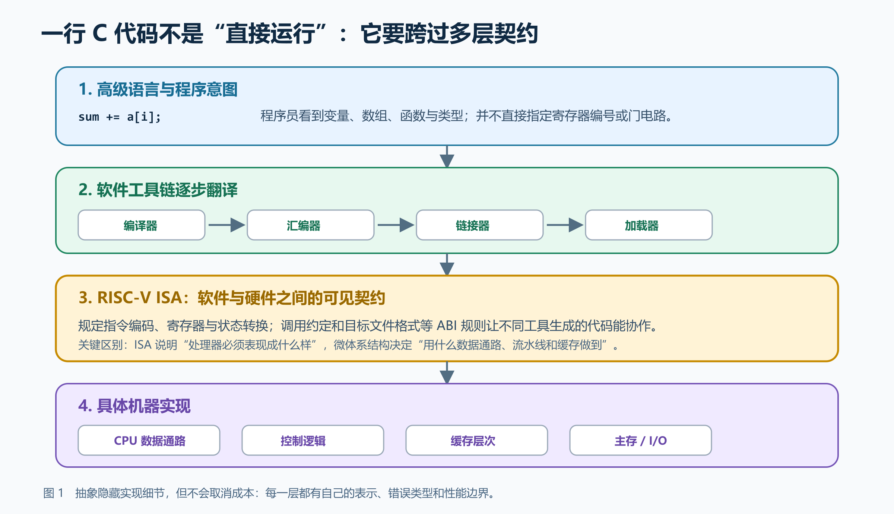
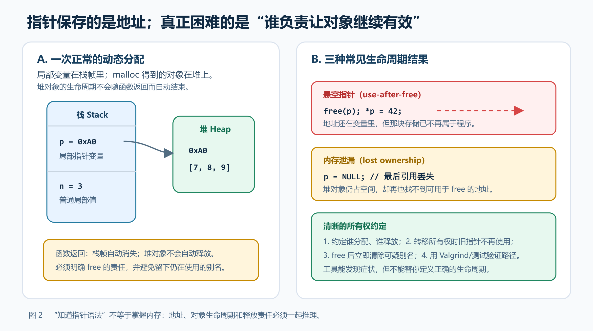
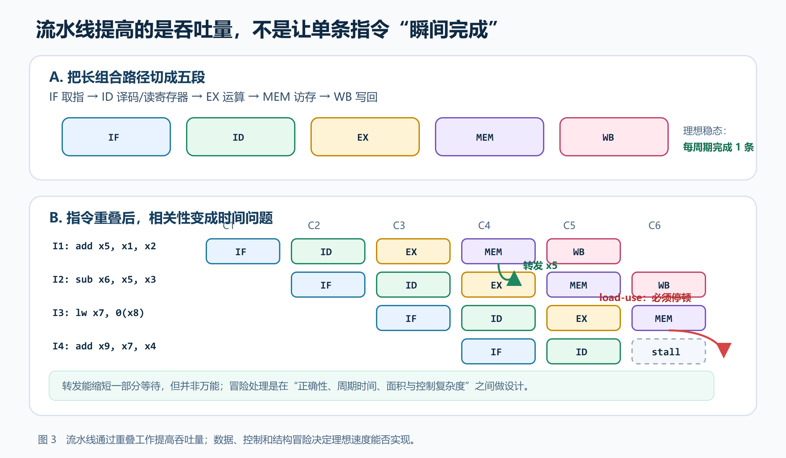
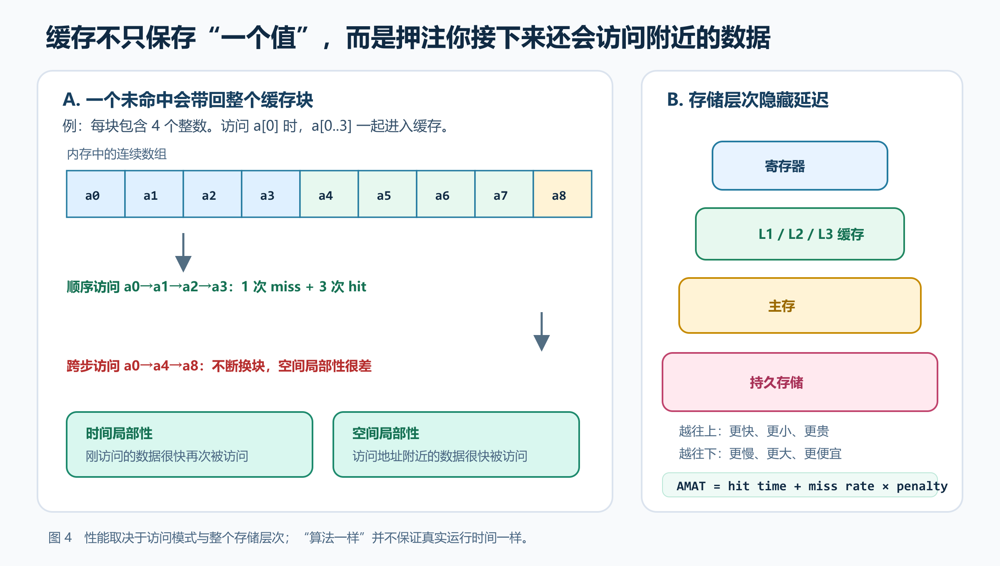

摘要
CS61C 常被概括成“计算机组成原理”，也有人把它当作一门 C 语言或汇编语言速成课。这些说法都只截取了课程的一层。课程真正反复训练的是：一个高级语言程序怎样经过表示与翻译，变成处理器能够执行的状态变化；体系结构又怎样借助流水线、缓存、并行和虚拟内存，在正确性、性能、成本与复杂度之间做权衡。本文以 UC Berkeley CS61C Spring/Summer 2026 的课程日历、讲义与项目说明为主要事实依据，并参考 B 站上的 2020、2022 公开课字幕与中文配音整理，从四个具体问题展开：指针为什么会让内存生命周期暴露出来？ISA 为什么既不是汇编语法表，也不是具体 CPU 电路？流水线为何会被数据相关打断？缓存为什么让同样复杂度的程序出现巨大性能差异？这些问题共同说明，CS61C 最值得带走的不是若干硬件名词，而是一种跨层推理能力：知道抽象替你隐藏了什么，也知道被隐藏的代价仍然存在。
关键词： CS61C；计算机体系结构；C；RISC-V；流水线；缓存；虚拟内存；性能分析
资料范围：截至 2026 年 9 月 3 日，Fall 2026 已经开课，官方日历已列出从数值表示到虚拟内存的完整安排，但后半学期内容尚未实际完成。本文因此仍以已完结且资料完整的 Spring 2026 和 Summer 2026 为课程主线，并用 Fall 2026 页面核对当前课程结构；B 站资源只用于中文观看建议，不用于证明当前项目和政策。本文不提供任何作业答案。
引子：sum += a[i] 到底发生了什么？
在高级语言里，sum += a[i] 只是一行普通代码。程序员看到数组、下标和加法，编译器却要选择指令，汇编器要把助记符编码成位，链接器要解决符号与地址，加载器要把程序放入内存。处理器取出指令后，控制逻辑驱动寄存器、算术逻辑单元和存储器；如果使用流水线，还要考虑前后指令之间的数据相关；如果数据不在缓存里，几十乃至更多个处理器周期可能被等待吞掉。
这一行代码并没有在任何一层“消失”，只是被逐步改写成不同表示。上层提供更容易思考的模型，下层负责兑现模型。抽象让人不必每次都从晶体管开始写程序，却没有取消内存容量、通信延迟、能耗和同步成本。
这也是 CS61C 最有力量的切入点：不是把计算机拆成一堆孤立部件，而是追踪一个程序如何穿过这些部件，并解释每层的承诺在哪里成立、在哪里泄漏。
一、把 CS61C 理解成“硬件课”，前提并不完整
Berkeley 课程目录将 CS61C 定义为 Great Ideas of Computer Architecture (Machine Structures)，内容包括数字计算机的内部组织与运行、高级语言和操作系统所需的体系结构支持、数字逻辑基础，以及基本架构选择中的权衡；正式先修要求是 CS61B/61BL 或相当的编程经验。UC Berkeley Catalog：COMPSCI 61C
这里有两个容易忽略的限定。
第一，它讨论的是“程序员视角下的机器”。课程会接触组合逻辑、状态元件和 CPU 数据通路，却不是从半导体器件、电路版图或模拟电子学开始；它关心的是逻辑机器如何执行程序，以及哪些硬件机制会影响软件的正确性和性能。
第二，它同样不是 C 语言教程。C 被选中，是因为它保留了足够多的高级结构，同时让地址、内存布局、手动释放、整数溢出和编译过程暴露出来。若只把目标定成“学会指针语法”，会错过课程为什么把 C 放在 RISC-V、缓存和虚拟内存之前。
Spring 2026 的公开日历依次覆盖数值表示、C 与内存管理、浮点数、RISC-V、编译—汇编—链接—加载、同步数字系统、单周期 CPU、五级流水线、缓存、性能与并行、虚拟内存。CS61C Spring 2026 课程主页 这条顺序不是主题堆叠，而是一条从软件语义逐步下沉到机器实现、再回到系统性能的路线。
因此，一个更准确的概括是：
CS61C 研究程序如何被机器实现，以及实现选择怎样反过来约束程序。
二、抽象层次：隐藏细节，不等于取消成本
学习体系结构时，最危险的误解之一，是把课程章节看成互不相干的知识块：前几周写 C，中间背 RISC-V，后面画电路，最后计算缓存。实际上，它们都在回答同一件事——一个计算意图如何在不同表示之间被翻译。

在最上层，程序由变量、数组、函数和类型组织。编译器把这些结构转换为目标 ISA 上的指令序列；汇编器把指令编码为目标文件，链接器把多个目标文件和库组合起来，加载器建立进程可执行的内存映像。到了 ISA 层，软件能够依赖的是寄存器、指令语义、异常等可见状态；再往下，处理器可以用单周期、多周期、五级流水线乃至更复杂的微体系结构兑现同一 ISA。
图 1 中还故意把 ISA 和 ABI 区分开。ISA 主要规定处理器对软件可见的机器行为；调用约定、目标文件格式等 ABI 规则则保证由不同工具生成的代码能够调用、链接和运行。把“RISC-V 汇编语法”“RISC-V ISA”和“某颗 RISC-V CPU”当成同一件事，会导致许多概念混乱：同一条指令可以由不同电路实现，同一 ISA 也可以有不同流水线和缓存组织。
RISC-V 官方规范也强调，ISA 应被理解为面向软件的接口，而不是某个特定硬件制品的设计；其基础整数 ISA 与可选扩展的组织方式，正是为了让实现保持选择空间。RISC-V Unprivileged ISA Introduction
抽象的价值是控制复杂度。它允许 C 程序不必知道缓存组数，让 CPU 设计者不必理解某个业务函数的语义。但边界并非绝对隔离：未定义行为可能让编译器做出程序员没想到的优化；调用约定错误会让函数返回后寄存器状态损坏；缓存未命中会把内存层次的延迟重新暴露给循环。跨层学习的目标不是放弃抽象，而是知道什么时候必须向下看一层。
三、位表示与 C：机器不会替程序补全含义
课程从数值表示开始看似基础，实际上是在建立之后所有章节的共同语言。位本身没有“整数”“浮点数”或“指令”的天然身份；解释规则决定同一串位代表什么。补码让有符号整数的加减可以复用硬件，但可表示范围有限；有限位宽意味着溢出；IEEE 754 浮点数用符号、指数和尾数近似实数，因此舍入、非结合性、无穷和 NaN 都不是偶发 bug，而是表示模型的一部分。
一个典型误区是把十进制数学直觉直接搬进机器。比如浮点加法在一般情况下不满足严格结合律：(a+b)+c 与 a+(b+c) 可能因为舍入得到不同结果。这里不是硬件“算错了”，而是有限表示与运算顺序共同决定了结果。相似地，整数范围、符号扩展和类型转换若没有明确推理，汇编阶段会把问题放大。
C 进一步把表示与生命周期暴露出来。数组名在许多表达式中会转换成指向首元素的指针，但数组和指针仍不是完全相同的对象；指针算术以所指类型的大小为步长；字符串需要终止符；局部变量、静态存储和动态分配对象遵循不同生命周期。代码能编译，不代表指针仍指向一个有效对象。

图 2 把三类错误放在一起，是因为它们都不是简单的“语法错”。悬空指针保留了旧地址，却失去了访问该存储的权利；内存泄漏则相反，对象仍占用堆空间，但程序丢掉了能释放它的最后路径；双重释放常来自所有权没有说清，两个调用方都以为自己负责回收同一个对象。
这也是为什么调试工具重要，却不能取代设计。Valgrind、地址消毒器或调试器能够帮助发现越界、泄漏和非法访问，但它们不知道业务上谁应该拥有对象。更可靠的习惯是：在写 malloc 时就同时写下释放路径；传递指针时说明是借用、共享还是转移所有权；让失败路径也经过清理；用最小输入、空输入和重复调用检查生命周期。
Spring/Summer 2026 的 Project 1 snek 要求学习者用 C 表示并更新贪吃蛇棋盘，处理动态内存、文件输入、结构体、测试和调试。项目说明特别指出提供的测试并不全面，并要求对部分辅助函数编写自定义测试；这说明课程不是把“通过现成测试”等同于正确。Project 1: snek
四、RISC-V：从“代码意思”走向“机器状态变化”
高级语言允许程序员写“调用函数”“访问数组”“创建局部变量”，机器指令却只看寄存器、立即数、地址与控制转移。RISC-V 部分的学习难点并不主要在背助记符，而在于把一个较大的语义动作分解为一连串精确的状态变化。
以函数调用为例，call 不是凭空创建一个新世界。调用者和被调用者必须约定参数放在哪里、返回值放在哪里、哪些寄存器由谁保存、返回地址如何保留、栈指针如何移动。调用约定的价值，正是让分别编写或编译的函数能够组合。若某个函数破坏了应保存寄存器，错误可能直到几层调用之后才出现；症状看似随机，根因却是边界契约被破坏。
数组访问也会失去高级语言的保护。机器需要显式计算基址加偏移，载入数据，再进行运算。二维矩阵按行主序存储时，地址计算取决于列数和元素大小；一个乘法或移位写错，程序仍可能访问“某个合法地址”，只是语义已经偏离。汇编调试因此应当同步跟踪三张表：寄存器用途、栈帧布局和内存区域，而不是只盯当前指令。
Project 2 CS61Classify 把这种训练放进一个具体任务：用 RISC-V 汇编实现简单的手写数字分类流程，并练习调用约定、函数调用、堆、文件和测试。Spring/Summer 2026 日历继续列出该项目；具体任务结构可参见 Fall 2025 官方公开说明。项目的价值不在于“用汇编重写机器学习”，而是迫使学习者面对高级运算背后的循环、地址、调用和资源管理。
学习 RISC-V 时，一个有效方法是对每条指令坚持写出四件事：读取哪些状态、写入哪些状态、程序计数器如何变化、失败或边界条件是什么。这样做比把 lw、sw、jal 当成单词卡更慢，却能直接迁移到数据通路和流水线。
五、从指令到 CPU：数据通路是语义的物理兑现
进入同步数字系统后，布尔代数、组合逻辑、状态元件和有限状态机容易让纯软件背景的学习者感到课程突然换轨。其实它们是在回答上一节留下的问题：处理器怎样让一条 RISC-V 指令规定的状态变化真的发生？
单周期数据通路通常把取指、读寄存器、运算、访存和写回放在一个时钟周期内。控制逻辑根据指令字段选择立即数生成方式、ALU 操作、下一条 PC、是否写内存以及写回来源。它的概念结构清楚，但时钟周期必须足够长，容纳最慢指令的完整组合路径；一条简单加法也要等待为复杂路径设置的周期结束。
流水线把这条长路径切成多个阶段，让不同指令同时占据不同阶段。理想稳态下，五级流水线可以做到每个周期完成一条指令，但这不等于每条指令只需要一个周期，也不等于性能必然提升五倍。

图 3 中，第二条指令读取第一条 add 产生的 x5。若结果已经在流水线后段出现，可以通过转发直接送回下一条指令的执行阶段，而不用等它正式写回寄存器文件。但 lw 的数据通常到访存阶段结束才可用，紧随其后的使用者可能仍需插入气泡。转发不是“消除所有依赖”，而是改变某些结果可被消费的时间。
控制冒险则来自分支：处理器在知道分支是否跳转前，可能已经取入了错误路径上的指令。停顿、冲刷流水线或预测都有成本。结构冒险来自多个阶段争用同一硬件资源。一个看似简单的“把 CPU 分成五段”，最终会增加流水线寄存器、旁路网络、冒险检测和控制复杂度。
Project 3 CS61CPU 要求学习者在 Logisim 中搭建能够执行实际 RISC-V 指令的处理器，并逐步加入更多指令与流水化。Spring/Summer 2026 日历继续列出该项目；详细目标可参见 Spring 2025 官方公开说明。这是课程最关键的闭环：在 Project 2 中由软件模拟器执行的汇编，到 Project 3 里变成自己搭出的数据通路行为。理解“每根控制线为什么是这个值”，比照着参考图把元件连起来更重要。
六、缓存：复杂度相同，运行时间仍可能完全不同
算法分析常把一次数组访问视为常数时间，但真实机器上的“常数”并不固定。处理器速度远高于主存，缓存用更小、更快的存储保存近期使用的数据副本，希望大部分请求不必走到更慢层级。这个机制依赖的不是运气，而是程序访问中的时间局部性和空间局部性。

一个缓存地址通常被拆成 offset、index 和 tag。offset 选择块内字节，index 找到候选组，tag 判断缓存里的块是否正是需要的内存块。直接映射缓存每组只有一个位置，结构简单却容易冲突；组相联增加候选位置，降低部分冲突，却带来更多比较、替换状态和硬件成本。更大块可以利用空间局部性，也会增加一次未命中的传输量并减少能同时驻留的块数。
平均内存访问时间常写成：
AMAT = hit time + miss rate × miss penalty
公式很短，却不应被机械套用。命中时间、未命中率和惩罚不是彼此独立的旋钮：提高相联度可能降低冲突未命中，却让命中路径更复杂；扩大缓存可能降低容量未命中，也可能影响面积、能耗和延迟；预取可能隐藏等待，也会浪费带宽或污染缓存。
局部性把硬件设计与代码结构重新连接起来。对二维数组按行主序连续遍历，通常比按列大步跨越更容易利用缓存块；对大数组进行分块处理，可能在不改变渐近复杂度的情况下显著提高命中率；链式结构的节点分散，可能让理论上相同数量的访问付出更多内存等待。这说明 Big-O 仍然重要，但不足以单独预测真实性能。
学习缓存最有效的方式不是只记 3C miss，而是手算一小段地址序列：先写块大小和组数，再把每个地址拆成 tag/index/offset，逐次更新每组内容与替换状态。只要跳过其中一步，“命中率直觉”就很容易失真。
七、并行与 Amdahl 定律：更多核心不是免费加速
课程后半段从流水线级并行继续走向数据级并行和线程级并行。SIMD 让一条指令处理多个数据元素，OpenMP 等工具帮助把工作分给多个线程；这些机制都能提供可观加速，但前提是任务存在足够的可并行部分，并且数据布局、同步和内存带宽没有成为新瓶颈。
Amdahl 定律给出一个常见上界。若程序中比例 p 的部分可以在 s 倍资源上加速，总加速比为：
Speedup = 1 / ((1 - p) + p / s)
当 s 趋近无穷时，串行部分 1-p 仍然存在。假如只有 90% 的时间可并行，理论极限也只是 10 倍；这还没有计入线程创建、通信、同步、负载不均和缓存一致性等开销。
并行程序的错误也和串行程序不同。两个线程对共享数据的访问顺序若没有同步，结果可能取决于调度；程序在一次运行中正确，不代表没有数据竞争。加锁可以建立顺序，却可能造成争用、死锁或过度串行化。性能优化的步骤因此应是：先测量热点，判断可并行比例，再设计任务和数据划分，最后验证正确性与可重复的加速，而不是先加线程再期待数字变好。
Summer 2026 的可选 Project 4 61kaChow 让学习者优化二维卷积与视频处理，涉及向量化、线程并行和基准测试。项目说明还明确提醒，共享 Hive 机器的负载会显著影响测量结果。Project 4: 61kaChow 这是一个很有价值的现实变量：一次跑得快，既可能来自代码，也可能只是机器当时更空闲。报告速度时应进行多次测量、记录环境并给出分布，而不是只挑最好的一次。
八、虚拟内存：地址也可以是一层抽象
在 C 中打印出的指针值看起来像“真实地址”，但现代程序通常使用虚拟地址。页表把虚拟页映射到物理页，TLB 缓存近期翻译；缺页异常允许操作系统把暂时不在物理内存中的页面调入。虚拟内存为进程提供隔离、重定位、共享和比物理内存更灵活的地址空间模型。
这又是一次熟悉的抽象：程序相信自己拥有连续的地址空间，系统在下层维护映射。代价包括页表存储、地址翻译延迟、TLB 未命中与缺页处理。页越大，页表项可能更少、TLB 覆盖范围更大，却会增加内部碎片和一次调页的数据量；多级页表节省稀疏地址空间的页表内存，却让未命中时的页表遍历更长。
缓存与虚拟内存不能孤立学习。一次载入先涉及地址翻译，再涉及缓存查找；系统设计要决定缓存使用虚拟还是物理地址的哪些部分，并避免别名和一致性问题。CS61C 不要求学习者立刻设计完整操作系统，但它提供了继续学习 OS、编译器、安全和高性能计算所需的共同底图。
九、项目序列：从管理字节，到让机器执行自己写的指令
把四个项目放在一起看，比单独列课程主题更能看出教学设计：
| 项目 | 表面任务 | 真正暴露的系统问题 |
|---|---|---|
Project 1 snek |
用 C 实现贪吃蛇状态更新 | 动态内存、字符串、结构体、文件、生命周期和调试 |
Project 2 CS61Classify |
用 RISC-V 汇编完成分类计算 | 调用约定、寄存器、栈、矩阵地址、文件和测试 |
Project 3 CS61CPU |
在 Logisim 中搭建处理器 | 指令译码、数据通路、控制、流水线与硬件验证 |
Optional Project 4 61kaChow |
优化二维卷积/视频处理 | 缓存局部性、SIMD、线程、基准与加速上限 |
这条路线可以概括为：
管理内存中的数据 → 用 ISA 表达计算 → 用电路兑现 ISA → 利用机器结构优化程序
Project 1 中的指针错误会在 Project 2 里变成地址和调用约定错误；Project 2 中对 RISC-V 的理解会在 Project 3 里变成控制信号；Project 3 的流水线和缓存又会解释 Project 4 为什么某种循环更快。项目不是四次重新开始，而是在不同抽象层重复观察同一类因果关系。
也要避免一个错误结论：完成项目不自动等于理解体系结构。照着脚手架连出能通过测试的 CPU，可能仍无法解释关键路径；达到某个加速数字，也可能只是针对给定输入过拟合。更可靠的检验是能否预测一个小程序的寄存器和内存变化，说明一条指令经过哪些硬件阶段，并解释性能数据中的主要瓶颈。
十、B 站上的 CS61C：适合补直觉，但版本必须成套
中文视频能显著降低第一次接触英文硬件术语的负担，尤其适合数值表示、调用约定、数据通路和缓存这些需要动态演示的主题。但视频版本、官网作业和工具链若被混用，会产生很多并非知识本身造成的错误。
| B 站资源 | 适合怎样使用 | 需要注意 |
|---|---|---|
| CS61C Summer 2020 中英文字幕完整版 | 选集完整、拆分细，适合系统跟课和按小节复习 | 2020 学期的项目、政策和工具说明不能直接套到 2026 |
| CS61C 2020 精翻中文语音版 | 中文听感更直接，适合第一次建立 C、RISC-V、CPU 与缓存的主线 | 属后期配音整理，术语最好与英文讲义交叉核对 |
| CS61C Spring 2022 中英字幕版 | 约 27 讲，主题顺序紧凑，并明确给出对应课程主页 | 课程压缩程度和当前学期不同，作业接口可能变化 |
| 页面标注 CS61C 2022 的中英字幕整理 | 包含讲座与部分讨论，适合寻找单个主题 | 页面混有其他数据结构视频，选集组织较杂，需核对标题 |
若只选一套，我更推荐先用 2020 中英文字幕完整版建立完整结构，再以 2026 官方讲义校准术语和章节。理由不是播放量，而是该版本选集清楚、主题覆盖完整，且 B 站页面明确说明来源与课程站。想降低听力负担时，可在同一主题上切换到中文语音版，但不要把中文配音中的个别译词当成唯一标准。
观看方式也决定收益。看 C 内存时，暂停视频自己画栈帧和堆对象；看 RISC-V 时，每次调用都写出参数寄存器、保存寄存器和返回地址；看流水线时画周期表，标出结果何时产生、消费者何时需要；看缓存时手算一段地址的 tag/index/offset。视频负责提供动态过程，纸笔预测负责暴露理解中的空洞。
课程版本应当成套选择。校外自学者可以固定一个公开学期，使用该学期的视频、讲义、项目说明与工具版本；不要把 2020 视频、2026 skeleton 和另一学期的测试脚本随意拼接。概念变化较慢，工程接口与环境变化很快。若只是学习知识，可做独立小练习；若在正式修课，则必须遵守当前学期的合作和学术诚信政策，不应搜索公开答案仓库。
十一、一套能真正学会 CS61C 的方法
1. 每个主题都画“状态变化图”
体系结构不是静态名词表。学习一条指令，要画执行前后哪些寄存器、内存和 PC 改变；学习 C 函数，要画栈帧创建、指针指向和释放路径；学习缓存，要画每次访问后每个组存了什么；学习虚拟内存，要画虚拟页、页表项、物理页和 TLB 的关系。
图画得不漂亮没有关系，但每条箭头必须能回答“谁在什么时候改变谁”。如果只能认出一张数据通路，却不能沿一条 lw 指令指出数据流和控制选择，就仍停留在识图而不是理解。
2. 同时使用三种表示
对一个小程序，至少保留三种版本：C 代码、RISC-V 指令和机器状态表。先预测高级语句需要哪些低层步骤，再在 Venus 中单步执行，比较寄存器与内存。出现差异时，不要立刻改代码，先判断错误属于算法语义、地址计算、调用约定还是指令编码。
进入 CPU 部分后，再加入第四种表示：数据通路。问同一条指令在电路中经过哪些多路选择器、ALU 输入来自哪里、写回什么。这样，Project 2 和 Project 3 才会真正连接起来。
3. 先定义性能指标，再谈“优化”
运行时间、吞吐量、延迟、CPI、时钟频率、缓存未命中率和加速比描述的是不同现象。频率更高不保证程序更快；CPI 更低也可能被更慢的时钟周期抵消；并行加速比若没有固定输入、基线、机器负载和测量方法，就难以比较。
一个基本性能模型是：
CPU time = instruction count × CPI × clock cycle time
编译器优化可能改变指令数，流水线和缓存影响 CPI，电路关键路径限制周期时间。优化其中一个因素，可能让另一个变差。先明确测量什么，再用 profile 或计数器寻找瓶颈，最后只改有证据的部分。
4. 把错误按抽象层分类
调试时可以问：
- C 层：对象是否存在？索引是否越界？所有权是否清楚？
- ABI 层：参数、返回值、保存寄存器和栈指针是否遵守约定？
- ISA 层：指令读写的状态与 PC 变化是否正确？
- 微体系结构层：控制信号、时序、转发和停顿是否正确？
- 存储层次：地址映射、命中、替换和写策略是否符合模型？
- 并行层：共享状态是否有竞争？工作是否均衡？同步是否过多？
这种分层不是为了推卸问题，而是缩小搜索空间。一次段错误首先是内存安全症状，不应立刻怀疑缓存；一条指令在单周期 CPU 正确、流水化后错误，应优先检查冒险和流水线寄存器，而不是重写汇编算法。
5. 用解释而不是分数检验掌握
自动评分器只能告诉你某些行为是否符合测试。真正掌握可以用五个问题自测：
- 为什么这个表示能表达目标状态？
- 一次操作会读写哪些状态？
- 正确性依赖什么不变量或时序条件？
- 性能瓶颈可能在哪一层？
- 如果改变输入规模或硬件参数，结论还成立吗？
如果能脱离原项目，对一个新例子回答这些问题，知识才开始具备迁移能力。
十二、容易被忽略的变量、成本与边界
第一，CS61C 默认学习者已有较稳定的编程和数据结构基础。课程目录的先修是 CS61B/61BL 或相当经验，而不是零基础。若函数、递归、数据结构、调试和命令行尚不熟练，C 的手动内存与汇编会把缺口同时放大；先补基础通常比强行追日历更有效。
第二，课程中的 CPU 是教学模型，不代表现代高性能处理器的全部细节。真实处理器可能包含乱序执行、寄存器重命名、复杂分支预测、多级 TLB、预取、一致性协议和专用加速器。五级流水线不是“CPU 的唯一结构”，而是理解并发执行、冒险和性能权衡的可控起点。
第三，理论峰值不等于可获得性能。缓存命中率取决于数据和访问模式；SIMD 受对齐、向量宽度和尾部处理影响；线程加速受串行比例、负载均衡、内存带宽和同步影响；共享服务器的噪声还会污染基准。只报告一次最快结果，是选择偏差而不是充分证据。
第四，低层代码更接近机器，不等于天然更快。手写汇编可能妨碍编译器优化，也更难维护和验证；复杂缓存技巧可能只对特定尺寸有效。优化应由测量驱动，并同时记录可读性、可移植性和测试成本。
第五，公开课程资料也有版本边界。截至 2026 年 9 月 3 日，Fall 2026 已经进入第二周，后续日历与作业细节仍可能调整；课程政策同时说明，课程笔记自 Spring 2026 起持续开发。CS61C Fall 2026；CS61C Course Notes 写博客时应标注资料日期，避免把某学期项目名或政策写成永久规则。
第六，LLM 能解释一般概念，却很容易绕过最重要的训练。Fall 2026 政策允许在极其谨慎的前提下询问一般概念和错误信息，但把复制较长作业规格、请求可直接提交的算法/代码、把自己的作业代码交给 LLM 审查列为不合理用法，并要求引用 AI 生成代码。CS61C Fall 2026 Policies 在正式课程中，应以对应学期政策和课程人员为最终依据。
最后，CS61C 也不是完整的系统课程终点。操作系统、编译器、网络、数据库、安全、分布式系统、GPU 与高级体系结构都需要后续学习。它提供的是这些领域共用的底层语言：表示、状态、接口、层次、并行和成本。
结语：被抽象隐藏的东西，仍然在付账
从 CS61A 到 CS61B，再到 CS61C，视角逐步从“怎样表达计算”，走向“怎样组织程序”，再走向“机器怎样兑现程序”。到了 CS61C，许多过去理所当然的动作重新变得可见：一个整数为什么有范围，一次数组访问为什么可能越界，一次函数调用为什么需要约定，一条指令为什么要经过数据通路，一段循环为什么会被缓存和并行结构改变速度。
课程最值得保留的能力，不是背下 RISC-V 指令表，也不是能画出一张五级流水线，而是能沿着抽象层追问：这层向上承诺了什么？向下依赖了什么？状态在哪里？延迟在哪里？并发会破坏什么？测量结果还受到哪些变量影响？
能回答这些问题，程序就不再是交给黑箱执行的一段文字，而是贯穿软件、指令、硬件和存储层次的一次因果过程。
图示说明：图 1—4 均为本文原创教学示意图，用于解释稳定概念，不是课程作业实现图。PNG 版本已直接嵌入文章；同目录保留 SVG 源文件。抽象层另附通过 Archify
showcase校验的交互式 HTML，适合本地放大查看，但博客正文不依赖它。
参考资料
官方课程与讲义
- UC Berkeley Catalog, COMPSCI 61C: Great Ideas of Computer Architecture (Machine Structures)，访问日期：2026-08-26。
- UC Berkeley CS61C, Spring 2026 Course Website，访问日期：2026-08-26。
- UC Berkeley CS61C, Summer 2026 Course Website，访问日期：2026-08-26。
- UC Berkeley CS61C, Fall 2026 Course Website，访问日期：2026-09-03。
- Lisa Yan and CS61C course staff, CS61C Course Notes，访问日期：2026-08-26。
- UC Berkeley CS61C, Fall 2026 Policies，访问日期：2026-09-03。
- RISC-V International, RISC-V ISA Manuals，访问日期：2026-08-26。
- RISC-V International, Introduction to the Unprivileged ISA，访问日期：2026-08-26。
项目与实践
- UC Berkeley CS61C, Project 1: snek — Summer 2026。
- UC Berkeley CS61C, Project 2: CS61Classify — Fall 2025 公开说明；2026 项目排期另见对应学期主页。
- UC Berkeley CS61C, Project 3: CS61CPU — Spring 2025 公开说明；2026 项目排期另见对应学期主页。
- UC Berkeley CS61C, Optional Project 4: 61kaChow — Summer 2026。
B 站中文观看材料
- Bilibili, CS61C Summer 2020 中英文字幕完整版，访问日期：2026-08-26。
- Bilibili, CS61C 2020 精翻中文语音版，访问日期：2026-08-26。
- Bilibili, CS61C Spring 2022 中英字幕版，访问日期：2026-08-26。
- Bilibili, 页面标注 CS61C 2022 的中英字幕整理，访问日期：2026-08-26。
注：B 站资源为字幕、配音或转载整理，仅用于中文学习路径建议。课程事实、项目要求和学术诚信政策以对应学期的 Berkeley 官方页面为准；本文不会链接或复述课程解答。